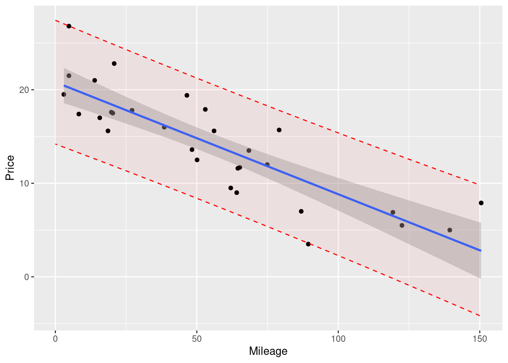

2 Inference for Simple Linear Regression
Chapter 2 uses the same simple linear regression model from Chapter 1 (the mode that uses mileage to explain the price of a used Honda Accord) as example to explain the logic of inferences based on Null Hypothesis Significance Tests (NHST) and the resulting p-values.
Luckily for us, we don’t have to learn many new tricks to execute the same hypothesis tests reported in Chapter 2, because the content of these tests were already present in the summaries we learned how to create in the previous chapter! However, we’ll reproduce those tables here, and point out where you can find the relevant statistics seen in Chapter 2 in the output seen from R.
2.1 Inference for Regression Slope
2.1.1 A t-test for the slope coefficient
Chapter 2.1 demonstrates that the t-statistic for the slope coefficient can be found by dividing the slope coefficient’s value by it’s estimated standard error. In this example, the t-statistic for the Mileage slope was shown to be -8.5. We can find the same standard error and t-statistic in the regression table produced by calling the summary() function on the fitted model object:
library(Stat2Data)
data("AccordPrice")
price_mileage_model <- lm(Price ~ Mileage, data = AccordPrice)
summary(price_mileage_model)
Call:
lm(formula = Price ~ Mileage, data = AccordPrice)
Residuals:
Min 1Q Median 3Q Max
-6.5984 -1.8169 -0.4148 1.4502 6.5655
Coefficients:
Estimate Std. Error t value Pr(>|t|)
(Intercept) 20.8096 0.9529 21.84 < 2e-16 ***
Mileage -0.1198 0.0141 -8.50 3.06e-09 ***
---
Signif. codes: 0 '***' 0.001 '**' 0.01 '*' 0.05 '.' 0.1 ' ' 1
Residual standard error: 3.085 on 28 degrees of freedom
Multiple R-squared: 0.7207, Adjusted R-squared: 0.7107
F-statistic: 72.25 on 1 and 28 DF, p-value: 3.055e-09Looking in the “Coefficients” section of the out, The standard error values for the intercept and slope are found in the column labeled Std. Error, and the t-statistic values are found in the adjacent column labeled t value.
In the last column of this regression table are the p-values associated with each t-statistic. Since the p-values for the intercept and slope coefficient in this model very small numbers, R displays their value in scientific notation. You can tell R is using scientific notation by the presence of the lower case e in the value, followed by a negative integer.
For example, the p value shown for the Mileage slope’s t-statistic is 3.06e-09. This notation means “move the decimal place to the left by 9 places to find the precise value”. So 3.06e-09 in scientific notation translates to an actual p-value of 0.00000000306 - a very small number indeed! It’s easy to misread the p-values given in scientific notation as very large numbers instead of very small numbers if you are quickly glancing over the table, so be sure to read them carefully!
2.1.2 A Confidence Interval for the slope coefficient
One piece of information about the slope coefficient the is noticeably absent from the regression table is the 95% confidence interval. Example 2.1 demonstrates how to find the bounds of the 95% confidence interval by applying the formula:
\[ \beta_1 \pm t^* \cdot SE_{\beta_1} \]
where \(t^*\) is the value of the 97.5th percentile of the \(t_{n-2}\) distribution. \(\beta_1\) and \(SE_{\beta_1}\) are easily found in the regression table, but finding the value of \(t^*\) will require one more computation. We can find this “critical value” by using the qt() function:
crit_t <- qt(p = .975, df=30-2)
crit_t[1] 2.048407The p argument reflects the fact that we’re interested in the 97.5th percentile (expressed as the proportion .975, instead of a percentage). And, we need to supply the appropriate degrees of freedom for this t-distribution, which in this case is 28 (30 cars gives us 30 degrees to freedom to begin with, minus two for the intercept and slope coefficients estimated while fitting the model).
Now, we have the “ingredients” for our confidence interval formula:
beta_1 <- -0.1198
crit_t <- qt(p = .975, df=30-2)
SE_beta <- 0.0141
lower <- beta_1 +- crit_t * SE_beta
upper <- beta_1 + crit_t * SE_beta
c("Lower" = lower, "Upper" = upper) Lower Upper
-0.14868254 -0.09091746 Luckily, we don’t have to take the time and effort to implement this formula manually; there are several high-level ways to perform this computation more quickly (and with less rounding error!). The confint() function is one such method:
price_mileage_model <- lm(Price ~ Mileage, data = AccordPrice)
confint(price_mileage_model) 2.5 % 97.5 %
(Intercept) 18.8577657 22.76146004
Mileage -0.1486848 -0.09093915The default setting for the confint() function is to produce a 95% confidence interval, but you can customize the confidence level by providing a different proportion as the level argument:
price_mileage_model <- lm(Price ~ Mileage, data = AccordPrice)
confint(price_mileage_model, level = .99) 0.5 % 99.5 %
(Intercept) 18.1766079 23.44261776
Mileage -0.1587608 -0.08086308As useful as the confint() function is, it’s often a bit awkward to have your regression table separated from the confidence interval for your coefficient. A useful function that can produce the regression table including the confidence interval boundaries is the tidy function from the broom package (Robinson, Hayes, and Couch 2022)
library(broom)
price_mileage_model <- lm(Price ~ Mileage, data = AccordPrice)
tidy(price_mileage_model, conf.int = TRUE, conf.level = .99)This regression table has all the same information as the one produced by the summary(), just with slightly different names:
broom::tidy() regression table |
summary() regression table |
|---|---|
term |
row names |
estimate |
Estimate |
std.error |
Std. Error |
statistic |
t value |
p.value |
Pr(>|t|) |
conf.low |
No corresponding column |
conf.high |
No corresponding column |
2.2 Partitioning Variability - ANOVA
Although the ANOVA table isn’t explained until Chapter 2, we already saw how to produce it for ourselves back in Chapter 1 using R’s anova() function.
However, there is one discrepancy between the output shown in the textbook, and R’s anova() function: R does not display an “SS Total” row in it’s ANOVA table. This is a minor loss, since the “SS Total” is of course, based on the sum of all the previous rows.
However, if you do need that row for some particular reason, it is easily reproduced with a little help from dplyr:
library(dplyr)
Attaching package: 'dplyr'The following objects are masked from 'package:stats':
filter, lagThe following objects are masked from 'package:base':
intersect, setdiff, setequal, unionprice_mileage_model <- lm(Price ~ Mileage, data = AccordPrice)
original_table <- as_tibble(anova(price_mileage_model), rownames = "Term")
total_row <- tibble(Term = "Total",
Df = sum(original_table$Df),
`Sum Sq` = sum(original_table$`Sum Sq`)
) %>%
mutate(`Mean Sq` = `Sum Sq`/Df)
full_table <- bind_rows(original_table, total_row)
full_table2.3 Regression and Correlation
2.3.1 The Coefficient of Determination \(R^2\)
Once again, we don’t need to learn how to do any new computations to find the \(R^2\) value of a linear model: it’s already shown in the output from R’s summary() command:
Call:
lm(formula = Price ~ Mileage, data = AccordPrice)
Residuals:
Min 1Q Median 3Q Max
-6.5984 -1.8169 -0.4148 1.4502 6.5655
Coefficients:
Estimate Std. Error t value Pr(>|t|)
(Intercept) 20.8096 0.9529 21.84 < 2e-16 ***
Mileage -0.1198 0.0141 -8.50 3.06e-09 ***
---
Signif. codes: 0 '***' 0.001 '**' 0.01 '*' 0.05 '.' 0.1 ' ' 1
Residual standard error: 3.085 on 28 degrees of freedom
Multiple R-squared: 0.7207, Adjusted R-squared: 0.7107
F-statistic: 72.25 on 1 and 28 DF, p-value: 3.055e-09
2.3.2 The Correlation Coefficient
The correlation coefficient between two variables can be computed using R’s cor() function, supplying either the outcome explanatory variable as the x argument, and the remaining argument as the y argument. Here, we use cor() as a summary function inside of dplyr’s summarize() function:
AccordPrice |>
summarize(r = cor(x = Mileage, y = Price))To perform a t-test on the correlation coefficient, you can use the cor.test() function. The syntax for using the cor.test() closely resembles the syntax for the lm() function, using a formula and a data argument. However, since the correlation coefficient is symmetric (and neither variable is considered the ‘outcome’ or ‘explanatory’ variable), both variables go on the right hand side of the tilde, separated by a +.
cor.test(formula = ~ Mileage + Price, data=AccordPrice)
Pearson's product-moment correlation
data: Mileage and Price
t = -8.5002, df = 28, p-value = 3.055e-09
alternative hypothesis: true correlation is not equal to 0
95 percent confidence interval:
-0.9259982 -0.7039888
sample estimates:
cor
-0.8489441 2.4 Intervals for Predictions
In Section 2.4, two intervals around the regression line are introduced:
- The confidence interval around the conditional mean of the outcome variable
- The “prediction interval” around the conditional value of the outcome variable.
The formulas given for these intervals are similar to that for the confidence interval around the value of the slope coefficient, only with a more complex standard error estimator. Rather than implement these formulas ourselves, we’ll rely on R’s predict() function to get the job done.
R’s predict() function relies on using a fitted model object to generate predictions about the outcome variable. For example, if you give the predict() function our fitted Accord price model, it will return the predicted price of each car in the original data set, based on the known Mileage value and the fitted regression equation that relates Mileage to Price.
price_mileage_model <- lm(Price ~ Mileage, data = AccordPrice)
predict(price_mileage_model) 1 2 3 4 5 6 7 8
11.835698 14.459580 11.332488 14.807034 13.381272 20.234515 10.098425 18.317524
9 10 11 12 13 14 15 16
20.234515 15.022696 15.238357 20.450177 13.129667 19.815174 17.562709 18.377430
17 18 19 20 21 22 23 24
12.614476 10.397955 13.081742 2.777915 12.997874 14.088163 4.107827 19.144227
25 26 27 28 29 30
18.581111 18.928565 16.196853 18.437336 6.516047 6.132649 The predict() function isn’t limited to generating predictions for Mileage values in the original data set - we can generate prediction for any Mileage value we choose by including a new data frame of Mileage values as the newdata argument to the predict() function:
new_mileages <- data.frame(Mileage = c(20, 50, 100))
predict(price_mileage_model, newdata = new_mileages) 1 2 3
18.413374 14.819015 8.828418 And by changing the interval argument to either "confidence" or "prediction", we can find the upper and lower boundaries of the 95% confidence interval or prediction interval respectively:
new_mileages <- data.frame(Mileage = c(20, 50, 100))
# 95% confidence interval around conditional mean of y
predict(price_mileage_model, newdata = new_mileages, interval = "confidence") fit lwr upr
1 18.413374 16.888598 19.93815
2 14.819015 13.657874 15.98016
3 8.828418 7.080566 10.57627# 95% Prediction interval around conditional value of y
predict(price_mileage_model, newdata = new_mileages, interval = "prediction") fit lwr upr
1 18.413374 11.912606 24.91414
2 14.819015 8.393807 21.24422
3 8.828418 2.271739 15.385102.4.1 Visualizing Intervals Around a Regression Model
In Chapter 1, we learned how to visualize the predictions of a regression model using ggplot() and the geom_smooth() function specifically. In that example, we included the argument se = FALSE to suppress the confidence interval band around the regression line, since this interval had not been introduced yet.
This means that drawing the 95% confidence interval around your model’s predictions is as easy as removing se = FALSE from your code!
library(ggplot2)
ggplot(data = AccordPrice,
mapping = aes(x = Mileage, y = Price)
) +
geom_point() +
geom_smooth(method = lm, formula = y~x)
Drawing the 95% prediction interval is a bit more involved, since geom_smooth() doesn’t include the ability to draw them auto-magically.
To draw the boundaries of this interval as a smooth line across the entire range of the plot, we’ll first need to compute the upper and lower boundaries of the interval across a fine grid of x-axis values. Here, we’ll use the seq() function to create a sequence of Mileage values spaced out by .1 miles, starting at 0 and ending at 150:
new_mileages <- data.frame(Mileage = seq(from = 0, to = 150, by = .1))Then, we’ll give these new Mileage values to the predict() function, and ask for boundaries of the 95% prediction interval around each of these nrow(new_mileages) Mileage values:
prediction_interval <- predict(price_mileage_model,
newdata = new_mileages,
interval = "prediction",
)Since we need to eventually supply these values to ggplot, and ggplot only deals with data frames, we’ll need to coerce these values from a matrix into a data frame:
prediction_interval <- as.data.frame(prediction_interval)Lastly, we need to combine these predictions about the outcome variable with the Mileage values we based on them on. Each row of the new_mileage data frame represents a Mileage value, and each row of the predcition_interval data frame represents the corresponding predicted Price. So, what we need to is combine these two data frames together “side by side”, so each row matches up! Let’s use the bind_cols() function from the dplyr() package to do this:
prediction_interval <- bind_cols(new_mileages, prediction_interval)Now, we’re ready to plot! Here, we demonstrate two ways of adding this interval to the plot. First, we’ll draw the boundaries of this interval as two separate dashed lines:
ggplot(data = AccordPrice,
mapping = aes(x = Mileage, y = Price)
) +
geom_point() +
geom_smooth(method = lm, formula = y~x) +
geom_line(data = prediction_interval,
mapping = aes(y=upr),
color="red", linetype=2
) +
geom_line(data = prediction_interval,
mapping = aes(y=lwr),
color="red", linetype=2
)Note that we had to supply the prediction_interval data frame as a layer-specific data frame for the geom_line function.
If you prefer the “filled in” style of interval (like how the confidence interval appears from geom_smooth()), you can use geom_ribbon():
ggplot(data = AccordPrice,
mapping = aes(x = Mileage, y = Price)
) +
geom_point() +
geom_smooth(method = lm, formula = y~x) +
geom_ribbon(data = prediction_interval,
mapping = aes(y=fit, ymax=upr, ymin=lwr),
color="red", fill="red",
alpha=.05, linetype=2
)
Take note of a few important things about this version of the prediction interval:
- We drew it before drawing the confidence interval and the regression line, so the shading of the confidence interval would not be affected by the shading of the prediction interval.
- The names of the
y,ymaxandyminaesthetic matched the names of the columns in theprediction_intervaldata set - We set the
alphaargument to a very small number, in order to make the interval transparent, and avoid obscuring the data points. We recommend that you use an alpha value between .02 and .1 for your plots.